Reparación de neumáticos
Advertencia:
| • | El cambio de neumáticos puede resultar peligroso y debería ser llevado a cabo por profesionales con experiencia y empleando las herramientas y procedimientos adecuados. Lea y asegúrese de comprender siempre las advertencias del fabricante recogidas en la documentación dirigida al cliente o impresa en la pared lateral del neumático. |
| • | La ausencia de protecciones adecuadas de ojos y oídos durante el proceso de reparación de neumáticos podría conllevar lesiones serias. |
| • | No infle NUNCA el neumático a más de 275 kPa (40 libras) de presión en los talones. |
| • | NUNCA se ponga de pie, se apoye o ponga encima del conjunto durante su inflado. |
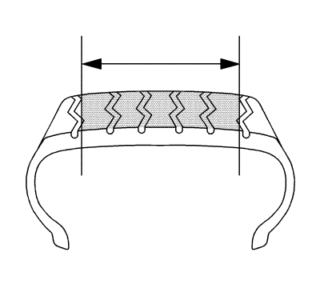
Zona reparable de un neumático radial.
Nota:
| • | No repare NUNCA neumáticos gastados hasta las marcas que indican que queda una profundidad de 1,59 mm (2/32 pulg.). |
| • | No repare NUNCA neumáticos con un pinchazo de más de 6,35 mm (1/4 pulg.). |
| • | NUNCA sustituya una cámara interior por una reparación permisible o no permisible. |
| • | NUNCA realice una reparación de neumático en la rueda (sólo parche, en la rueda). |
| • | Se tiene que sacar cada neumático de la rueda para poder inspeccionarlo y repararlo debidamente. |
| • | Independientemente del tipo de reparación utilizado, se debe sellar el forro interior y rellenar el punto dañado. |
| • | Consulte con el proveedor del material de reparación/fabricante sobre los procedimientos de aplicación de la unidad de reparación y las herramientas/material de reparación recomendados. |
Tres pasos básicos para reparar un pinchazo de neumático:
- Saque el neumático de la rueda para inspeccionarlo y repararlo.
- Llene el punto dañado (pinchazo) para bloquear la humedad.
- Selle el forro interior con una unidad de reparación para impedir una fuga de aire.
Inspección externa
- Antes del desmontaje, inspeccione la superficie del neumático, la válvula y la rueda para identificar la fuente de la fuga utilizando una solución de agua y jabón. Marque la zona dañada y desinfle totalmente el neumático retirando el núcleo de válvula.
- Desmonte el neumático de la rueda y colóquelo en una herramienta de extensión bien iluminada:
Inspección interna
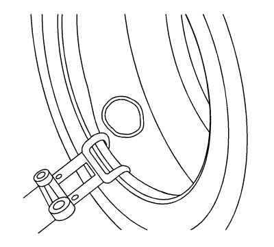
- Extienda los talones de la cubierta y marque el pinchazo con un lápiz de neumáticos.
- Inspeccione el neumático interior por si hubiera indicios de daño interno.
- Retire el objeto que ha causado el pinchazo, tomando nota de la dirección de penetración.
- Introduzca una lezna roma por el pinchazo para determinar la extensión y la dirección del punto dañado.
- Retire del punto dañado cualquier material extraño que esté suelto.
- Los pinchazos de más de 6,35 mm (1/4 pulg.) no se deben reparar.
Limpieza
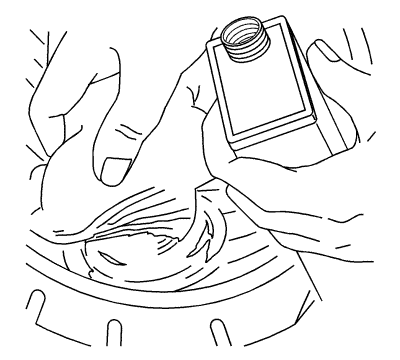
- Limpie profundamente el área alrededor del pinchazo con un limpiador adecuado, un trapo limpio y un rascador. Este paso sirve para retirar la suciedad y lubricantes con el fin de asegurar una adhesión correcta y una no contaminación de la herramienta de pulido.
- Consulte la información en el producto o en la hoja de datos técnicos de seguridad del material y siga las indicaciones para manejar y desechar materiales.
Limpie el canal del punto dañado
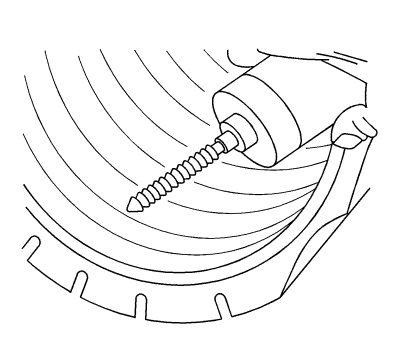
- Utilice un escariador manual adecuado, una fresa de metal duro o una roca para rascar el canal del pinchazo del interior del neumático para limpiar el punto dañado.
- Retire los cables de acero que sobresalen de la superficie del forro para impedir que se dañe la unidad de reparación.
- Consulte con su proveedor de material de reparación para obtener información sobre el/los escariador(es) recomendado(s).
Rellene el punto dañado
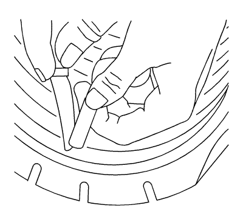
- Es necesario rellenar el canal del punto dañado para ofrecer soporte a la unidad de reparación e impedir que entre humedad en el material del neumático y los cables de acero.
- Para unidades de combinación de reparación/parche saltar este paso. Cementar el canal dañado y rellenar el punto dañado desde el interior del neumático con el parche de reparación siguiendo las recomendaciones del fabricante del material de reparación. Sin estirar el parche, córtelo justo por encima de la superficie interior del neumático:
- Consulte con su proveedor de material de reparación para que le ayude a seleccionar el material adecuado para la reparación.
Selección de la unidad de reparación
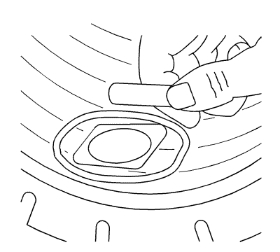
Nota: No instale la unidad de reparación en este paso.
- Centre la unidad de reparación sobre el punto dañado como referencia y dibuje un área más grande que la unidad de manera que el pulido no borre las marcas del lápiz.
- Desmonte la unidad de reparación.
- NO solape unidades de reparación previas o varias unidades de reparación.
- Consulte con su proveedor de material de reparación para que le ayude a seleccionar la unidad adecuada para la reparación.
Pulido
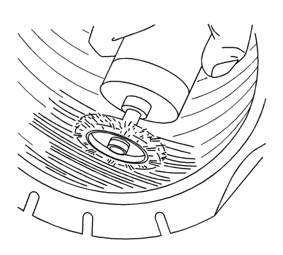
- Para impedir la contaminación y conservar el contorno, pula sólo dentro del área marcada, completa y uniformemente, con una herramienta de pulido a baja velocidad, utilizando un cepillo de alambre fino o un raspador de lija.
- Pula hasta dejar una superficie suave (textura pulida RMA #1 o #2).
- Tenga precaución de no perforar el forro interior o dejar al descubierto el material de la carcasa.
- Retire el polvo resultante del pulido con una aspiradora.
- Consulte con su proveedor de materiales para determinar una herramienta de pulido adecuada.
Cementación
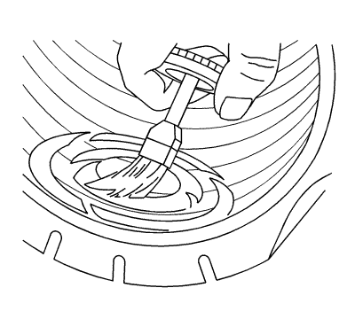
Aplique cemento químico según los procedimientos de material de reparación recomendados por el fabricante.
Aplicación de una unidad de reparación
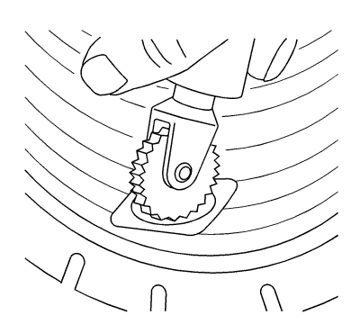
El neumático debe estar en posición relajada cuando se instala la unidad de reparación. No extienda los talones de la cubierta excesivamente.
Parche de dos piezas y unidades de reparación
- Si es necesario, monte la unidad de reparación de forma que la alineación sea correcta.
- Centre la unidad de reparación sobre el punto dañado y cósala completamente con la herramienta pespuntadora, trabajando desde el centro hacia fuera.
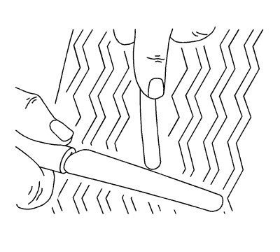
- Tenga cuidado de no extender el material del parche, córtelo a nivel de la banda de rodadura exterior.
Unidades de combinación de reparación/parche
- Empuje el parche a través del punto dañado hasta que llegue al forro. Cosa completamente.
- Siga las recomendaciones del fabricante del material de reparación para más instrucciones de colocación.
Consulte con su proveedor de materiales para determinar la herramienta pespuntadora adecuada.
Jaula de seguridad
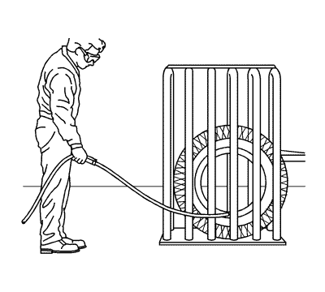
Algunos neumáticos pinchados pueden requerir más de 275 kPa (40 psi) para asentar el talón de la cubierta. En tal caso, se debe utilizar una jaula de seguridad de neumático. Consulte con el fabricante del neumático sobre su política individual de reparaciones.
Inspección final
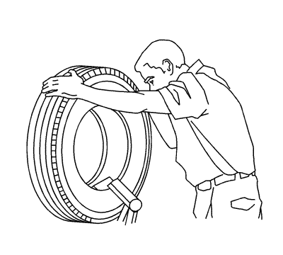
- Tras remontar y reinflar el neumático, compruebe los talones de la cubierta, la reparación y la válvula con una solución de agua y jabón para detectar fugas.
- Si el neumático continúa perdiendo aire, se debe volver a desmontar e inspeccionar.
- Equilibre el conjunto de neumático y llanta. Consultar Equilibrado del conjunto de neumático y llanta - Fuera del vehículo .
| © Copyright Chevrolet. Reservados todos los derechos |